library(terra)
library(sf)
library(tmap)
library(ggplot2)
library(dplyr)
library(rnaturalearth)
library(rnaturalearthdata)
library(rgbif)
library(viridis)
library(geodata)
library(randomForest)
library(caret)
dir.create("data", showWarnings = FALSE)
dir.create("figures", showWarnings = FALSE)
dir.create("output", showWarnings = FALSE)Acoustic Refugia for Frogs: Mapping Communication Space in Noise-Polluted Landscapes
Introduction
Anurans rely on acoustic communication for mate attraction, territorial defense, and species recognition. Anthropogenic noise from roads, aviation, and urban development increasingly masks these signals, reducing communication range and potentially disrupting reproductive success. Understanding where frogs can effectively communicate across a landscape is essential for conservation planning and the design of acoustic monitoring networks.
This project combines noise pollution data, satellite-derived land cover, and species-specific bioacoustic parameters to identify acoustic refugia — areas that are both ecologically suitable habitat and quiet enough for effective vocal signaling. Henceforth,
1) The spatial predictions are validated using occurrence records from the Global Biodiversity Information Facility (GBIF)
2) A hand-built refugia index is compared with a machine learning (Random Forest) species distribution model to assess the relative importance of noise versus habitat in shaping frog distributions.
Study Area
I focus on the Shenandoah Valley in Virginia, USA, a region spanning protected forest (Shenandoah National Park), agricultural land, small towns, and major transportation corridors. This gradient provides natural variation in both habitat quality and noise exposure, making it a suitable context for the acoustic refugia framework.
Setup
Define Study Area
# Bounding box: Shenandoah Valley near Front Royal, VA
study_bbox <- ext(-78.5, -77.8, 38.7, 39.2)
# State boundaries for context
states <- ne_states(country = "United States of America", returnclass = "sf")
virginia <- states %>% filter(name == "Virginia")
study_area_sf <- st_as_sf(as.polygons(study_bbox, crs = "EPSG:4326"))
ggplot() +
geom_sf(data = virginia, fill = "lightgray", color = "black") +
geom_sf(data = study_area_sf, fill = NA, color = "red", linewidth = 1.5) +
labs(title = "Study Area: Shenandoah Valley, VA") +
theme_minimal()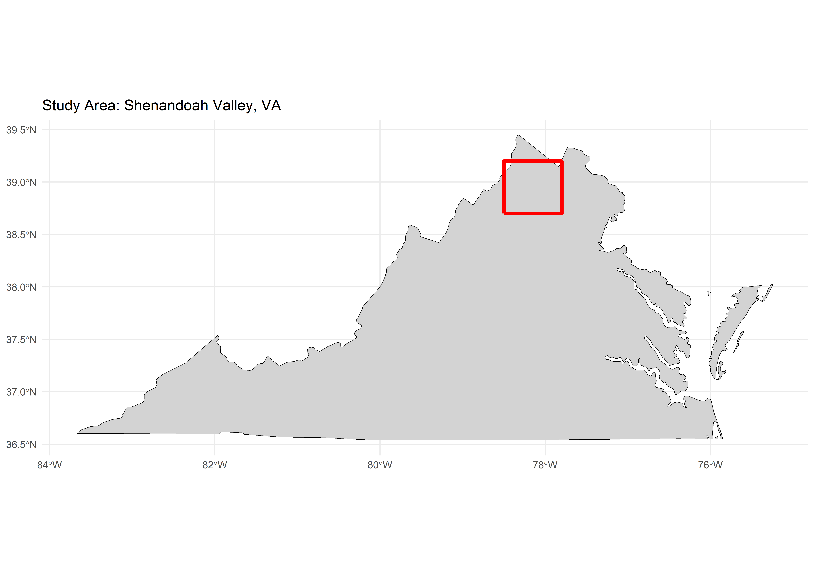
ggsave("figures/01_study_area.png", width = 8, height = 6, dpi = 300)Noise Pollution Mapping
Traffic noise attenuates approximately logarithmically with distance from the source. We model noise levels as a function of distance to the nearest road, using Natural Earth road network data. A typical highway generates ~75 dB at 15m, with roughly 6 dB attenuation per doubling of distance.
For higher-resolution analyses, this layer can be replaced with the US Bureau of Transportation Statistics National Transportation Noise Map, which provides modeled road and aviation noise levels at ~30m resolution.
# Create template raster at ~250m resolution
template <- rast(study_bbox, res = 0.0025, crs = "EPSG:4326")
# Download and crop roads
roads_us <- ne_download(scale = 10, type = "roads", category = "cultural",
returnclass = "sf")
roads_crop <- st_crop(roads_us, st_buffer(study_area_sf, 0.1))
#The 0.1 is a buffer distance in degrees — roughly 10 km. It expands the study area box slightly before cropping the roads.
# Calculate distance to nearest road
roads_vect <- vect(roads_crop)
road_distance <- distance(template, roads_vect)
names(road_distance) <- "distance_to_road_m"
# Source noise level based on Bendtsen (2004)
# "Effect of distance from road intersection on developed traffic noise levels"
# Canadian Journal of Civil Engineering, 31(4), 533-538
# &
# Bee and Swanson (2007) "Auditory masking of anuran advertisement calls by road traffic noise."
# Approximately 75 dB at 15m from road
source_db <- 75
ref_distance <- 15
road_dist_m <- road_distance
noise_modeled <- source_db - 10 * log10(road_dist_m / ref_distance)#logarithmic relationship between noise and distance
noise_modeled[noise_modeled < 25] <- 25 # ambient floor based on Hessler (2009) "Measuring ambient sound levels in quiet environments."
noise_modeled[noise_modeled > 90] <- 90 # source cap
names(noise_modeled) <- "estimated_noise_dB"
# Save noise map
png("figures/02_noise_map.png", width = 8, height = 6, units = "in", res = 300)
plot(noise_modeled, main = "Estimated Ambient Noise Level (dB)",
col = viridis(50, option = "magma", direction = -1))
dev.off()png
2 # ADD THIS LINE:
plot(noise_modeled, main = "Estimated Ambient Noise Level (dB)",
col = viridis(50, option = "magma", direction = -1))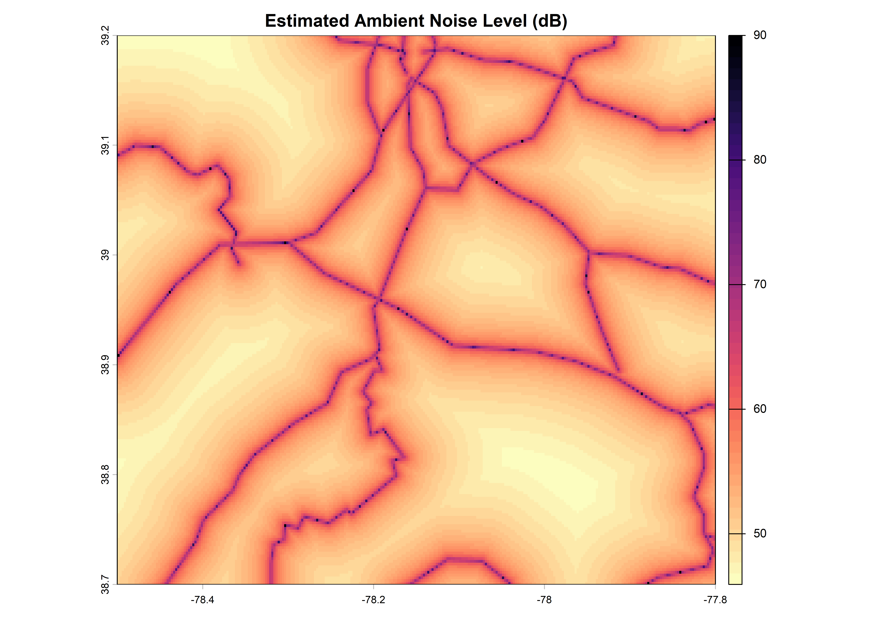
Areas near major roads show elevated noise levels (>60 dB), while remote forested areas approach the ambient noise floor (~25–30 dB; see Hessler (2009) “Measuring ambient sound levels in quiet environments.”). This spatial variation directly determines where frogs can and cannot communicate.
Species-Specific Communication Threshold
The effectiveness of acoustic communication depends on the signal-to-noise ratio at the receiver. We define a communication threshold based on species-specific call parameters.
# Species parameters — UPDATE THESE WITH YOUR DATA
species_name <- "Hyla versicolor"
# source level at 1m distnace based on Gerhardt (1975) "Sound pressure levels and radiation patterns of the vocalizations of some North American frogs and toads"
call_amplitude_dB <- 90
# required signal-to-noise ratio (dB); this is based on Bee and Swanson (2007) "Auditory masking of anuran advertisement calls by road traffic noise." approximately ~50% subjects behvaiorally responded to mating signals in H. chrysoscelis ( a sister species of H. versicolor) when traffic noise levels were 70dB and signal levels were 67dB
detection_snr <- -3
#acoustic trait values based on Kalra et. al (2024)"Perceptually salient differences in a species recognition cue do not promote auditory streaming in eastern grey treefrogs (Hyla versicolor)"
dom_hz <- 2400 # dominant frequency (Hz)
fund_hz <- 1200 #Fundamental frequency (Hz)
# Maximum ambient noise allowing communication
# Accounts for 26 dB propoagation loss at 10 meter
max_noise_for_comm <- call_amplitude_dB - detection_snr - 26
cat("Species:", species_name, "\n")Species: Hyla versicolor cat("Call amplitude:", call_amplitude_dB, "dB SPL at 1m\n")Call amplitude: 90 dB SPL at 1mcat("Detection SNR:", detection_snr, "dB\n")Detection SNR: -3 dBcat("Communication threshold:", max_noise_for_comm,
"dB (frogs can communicate below this level)\n")Communication threshold: 67 dB (frogs can communicate below this level)Communication Quality Index
Let’s convert noise levels into a continuous communication quality index (0 = too noisy, 1 = ideal quiet conditions).
comm_quality <- 1 - ((noise_modeled - 25) / (90 - 25))
comm_quality[comm_quality < 0] <- 0
comm_quality[comm_quality > 1] <- 1
names(comm_quality) <- "communication_quality"
# Communication quality figure plotting and saving
png("figures/03_communication_quality.png", width = 8, height = 6, units = "in", res = 300)
plot(comm_quality, main = "Communication Quality Index\n(1 = quiet, 0 = too noisy)",
col = viridis(50, option = "viridis"))
dev.off()png
2 # ADD THIS LINE:
plot(comm_quality, main = "Communication Quality Index\n(1 = quiet, 0 = too noisy)",
col = viridis(50, option = "viridis"))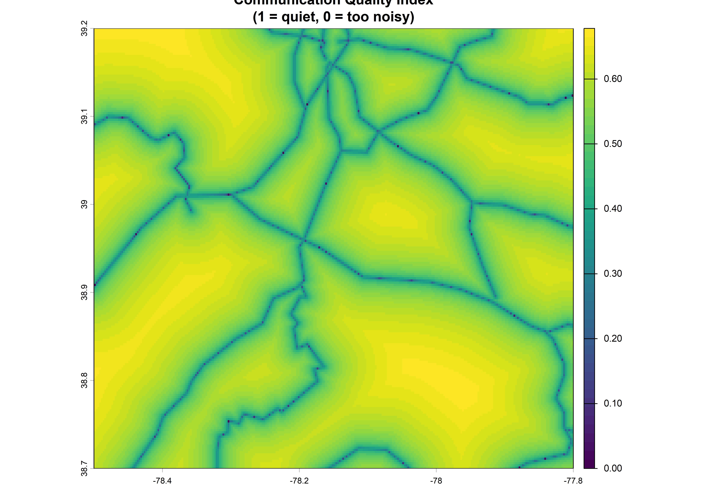
Communication Range Map
Let’s calculate the actual distance (in meters) that a call can travel at each location. This uses the inverse square law for sound propagation.
landcover_raw <- geodata::landcover(var = "trees", path = "data")
landcover_crop <- terra::crop(landcover_raw, study_bbox)
landcover_resamp <- terra::resample(landcover_crop, noise_modeled, method = "bilinear")
comm_range_func <- function(ambient_noise) {
excess <- call_amplitude_dB - ambient_noise - detection_snr
range_m <- ifelse(excess > 0, 10^(excess / 20), 0)}
comm_range_map <- app(noise_modeled, comm_range_func)
# Habitat-specific communication range caps (assuming a frog is calling at ground level)
# Based on empirical attenuation data from Schwartz et. al (2016) "Calling site choice and its impact on call degradation and call attractiveness in the gray treefrog, Hyla versicolor"
# Pond/open: 30 dB loss at 32m (spherical spreading)
# Forest: 36 dB loss at 32m (excess vegetation absorption)
# Recognition threshold: 43 dB; reported by Bee & Schwartz (2009) "Behavioral measures of signal recognition thresholds in frogs in the presence and absence of chorus-shaped noise."
# Treecover > 70 is classified as forest for simplicity and < 70 as open/pond
comm_range_capped <- comm_range_map
comm_range_capped[landcover_resamp > 70] <- pmin(
comm_range_map[landcover_resamp > 70], 91)
comm_range_capped[landcover_resamp <= 70] <- pmin(
comm_range_map[landcover_resamp <= 70], 224)
names(comm_range_capped) <- "communication_range_m"
png("figures/04_communication_range.png", width = 8, height = 6, units = "in", res = 300)
plot(comm_range_capped, main = paste("Communication Range for", species_name, "(meters)"),
col = viridis(50, option = "cividis"))
dev.off()png
2 # ADD THIS LINE:
plot(comm_range_capped, main = paste("Communication Range for", species_name, "(meters)"),
col = viridis(50, option = "cividis"))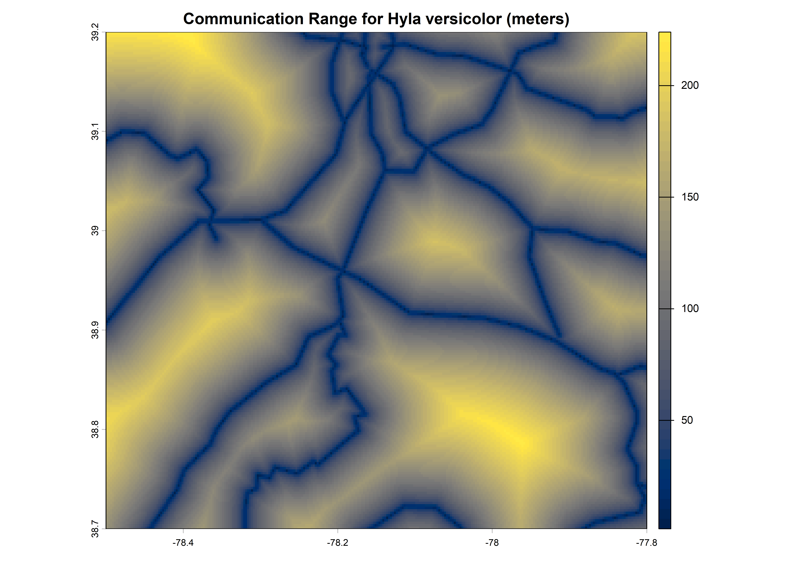
In quiet forest, frogs can be heard up to ~100–200m away. Near highways, communication range drops to near zero — effectively silencing the population even if habitat is otherwise suitable.
Habitat Suitability
Treefrogs require forested areas near water. I used satellite-derived tree cover data as a proxy for habitat suitability, with forest edges (20–80% canopy cover) rated as ideal.
# Download global tree cover percentage from ESA WorldCover
# Avoid function masking by using a distinct variable name
landcover_raw <- geodata::landcover(var = "trees", path = "data")
# Crop to study area — discard everything outside our bounding box
landcover_crop <- terra::crop(landcover_raw, study_bbox)
# Resample to match noise raster resolution and pixel grid
# Both rasters must have identical dimensions before combining
landcover_resamp <- terra::resample(landcover_crop, noise_modeled, method = "bilinear")
# Define the matrix using fractions (0.0 to 1.0) instead of percentages
# Format: c(lower_bound, upper_bound, new_value)
rcl_matrix <- matrix(c(
-Inf, 0.05, 0.05, # Less than 5% tree cover (urban/bare)
0.05, 0.20, 0.20, # 5% to less than 20% tree cover (sparse)
0.20, 0.70, 0.70, # 20% to less than 70% tree cover (moderate)
0.70, Inf, 1.00 # 70% and above tree cover (dense forest)
), ncol = 3, byrow = TRUE)
# Reclassify using the fractional matrix
# right = FALSE ensures intervals are handled as [from, to)
habitat_suit <- terra::classify(landcover_resamp, rcl = rcl_matrix, right = FALSE)
names(habitat_suit) <- "habitat_suitability"
# Plot and save
png("figures/05_habitat_suitability.png", width = 8, height = 6, units = "in", res = 300)
plot(habitat_suit, main = "Habitat Suitability for H. versicolor",
col = viridis::viridis(50, option = "mako"))
dev.off()png
2 # ADD THIS LINE:
plot(habitat_suit, main = "Habitat Suitability for H. versicolor",
col = viridis::viridis(50, option = "mako"))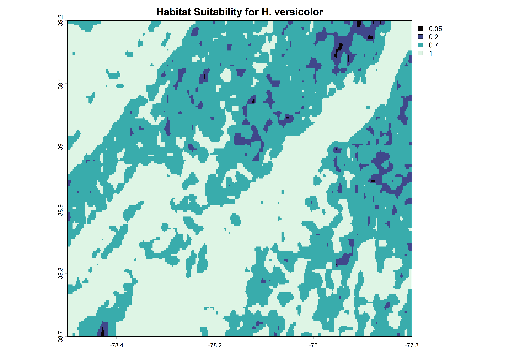
Acoustic Refugia Index
The Acoustic Refugia Index combines communication quality and habitat suitability into a single metric. High values indicate areas that are both ecologically suitable and acoustically viable for vocal communication.
\[\text{Acoustic Refugia Index} = \text{Communication Quality} \times \text{Habitat Suitability}\]
acoustic_refugia <- comm_quality * habitat_suit
names(acoustic_refugia) <- "acoustic_refugia_index"
# Normalize to 0-1
ari_range <- terra::minmax(acoustic_refugia)
ari_min <- ari_range[1]
ari_max <- ari_range[2]
# Apply the normalization formula
acoustic_refugia_norm <- (acoustic_refugia - ari_min) / (ari_max - ari_min)
names(acoustic_refugia_norm) <- "acoustic_refugia_normalized"
writeRaster(acoustic_refugia_norm, "output/acoustic_refugia_index.tif",
overwrite = TRUE)
#plot and save
png("figures/06_acoustic_refugia.png", width = 8, height = 6, units = "in", res = 300)
#plot and save
png("figures/06_acoustic_refugia.png", width = 8, height = 6, units = "in", res = 300)
plot(acoustic_refugia_norm,
main = "Acoustic Refugia Index\n(high = suitable habitat + low noise)",
col = viridis::viridis(50, option = "viridis"))
dev.off()png
2 # ADD THIS LINE:
plot(acoustic_refugia_norm,
main = "Acoustic Refugia Index\n(high = suitable habitat + low noise)",
col = viridis::viridis(50, option = "viridis"))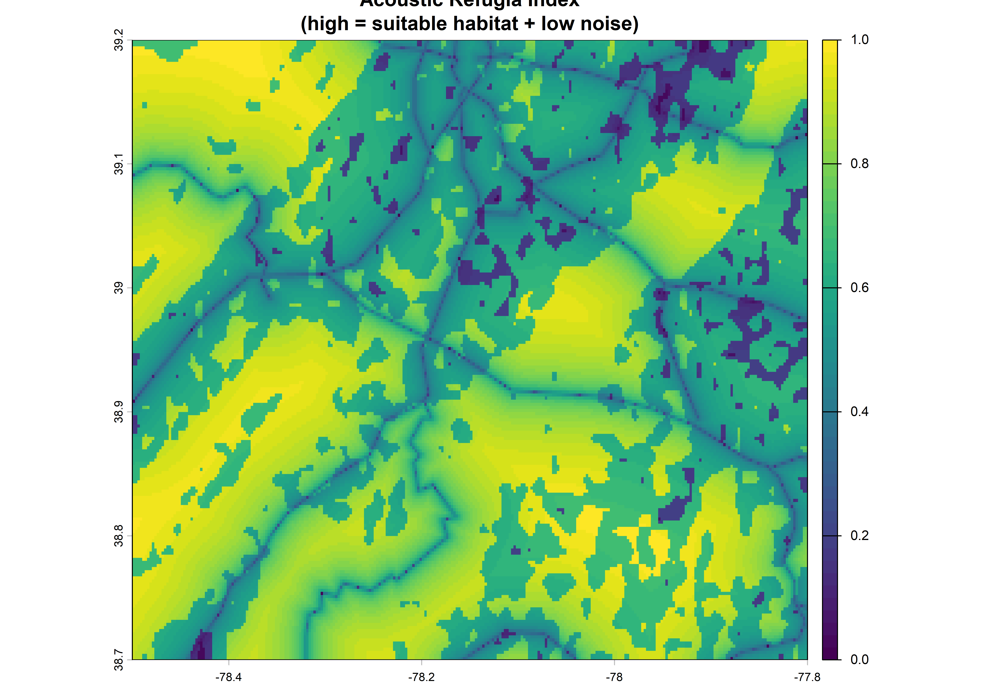
Species Occurrence Data
Downloading occurrence records from GBIF to both validate the model and provide training data for the machine learning analysis.
#| label: gbif-occurrences-and-thinning
# 1. Define the WKT polygon using the study area box
wkt_poly <- paste0(
"POLYGON((",
study_bbox[1], " ", study_bbox[3], ", ",
study_bbox[2], " ", study_bbox[3], ", ",
study_bbox[2], " ", study_bbox[4], ", ",
study_bbox[1], " ", study_bbox[4], ", ",
study_bbox[1], " ", study_bbox[3], "))"
)
# 2. Query GBIF for hyla versicolor
# Using a high limit of 10,000 to capture the true population scope #10000 records of spotting the species
res <- rgbif::occ_search(
scientificName = species_name, # this is set to "Hyla versicolor"
geometry = wkt_poly,
limit = 10000,
hasCoordinate = TRUE
)
# 3. Safety check and sf conversion
if (is.null(res$data) || nrow(res$data) == 0) {
stop(paste("Execution halted: No occurrence records found for", species_name))
}
occ_points <- res$data %>%
dplyr::filter(!is.na(decimalLongitude), !is.na(decimalLatitude)) %>%
sf::st_as_sf(coords = c("decimalLongitude", "decimalLatitude"), crs = 4326)
cat("Found", nrow(occ_points), "raw records for", species_name, "\n")Found 87 raw records for Hyla versicolor # 4. Spatial Thinning (Grid-based alignment with habitat raster)
# Extract raster cell ID for every occurrence point
occ_cells <- terra::cellFromXY(
habitat_suit,
terra::crds(terra::vect(occ_points))
)
# Add cell IDs to the dataframe and thin to 1 point per pixel
occ_points_thinned <- occ_points %>%
dplyr::mutate(cell_id = occ_cells) %>%
dplyr::filter(!is.na(cell_id)) %>% # Drop points outside raster boundary
dplyr::group_by(cell_id) %>% # Group by unique raster cell
dplyr::slice_sample(n = 1) %>% # Randomly select exactly 1 per cell
dplyr::ungroup()
# 5. Print final reduction statistics to the console
cat(
"--- Spatial Thinning Results ---\n",
"Original records:", nrow(occ_points), "\n",
"Thinned records:", nrow(occ_points_thinned), "\n",
"Removed", nrow(occ_points) - nrow(occ_points_thinned), "redundant/clustered points.\n"
)--- Spatial Thinning Results ---
Original records: 87
Thinned records: 60
Removed 27 redundant/clustered points.Acoustic refugia map with reported species occurrences
# Ensure tmap is in static plotting mode
tmap_mode("plot")
main_map <- tm_shape(acoustic_refugia_norm) +
tm_raster(
col.legend = tm_legend(title = "Acoustic\nRefugia Index"),
palette = "YlGn",
style = "cont",
midpoint = 0.5
) +
tm_shape(occ_points_thinned) +
# Aligned to v4 standard: fill (inside), col (border), lwd (border thickness)
tm_dots(shape = 21, size = 0.4, fill = "white", col = "black", lwd = 1.5) +
# NEW: Add a manual legend specifically for the occurrence dots
tm_add_legend(
type = "symbols",
title = "Species Observations",
labels = species_name, # Uses your existing species_name variable
shape = 21,
size = 0.4,
fill = "white",
col = "black",
lwd = 1.5
) +
tm_title(
text = paste0("Acoustic Refugia for ", species_name, "\nShenandoah Valley, VA"),
size = 1.0,
position = c("center", "top")
) +
tm_layout(
legend.position = c("right", "bottom"),
legend.bg.color = "white",
legend.bg.alpha = 0.8,
frame = TRUE
) +
tm_compass(position = c("left", "top"), size = 1.5) +
tm_scalebar(position = c("left", "bottom")) +
tm_credits(
text = paste0("Data: Natural Earth, ESA WorldCover, GBIF\n",
"Comm. threshold: ", max_noise_for_comm, " dB"),
position = c("right", "top"), size = 0.6
)
tmap_save(main_map, "figures/07_acoustic_refugia_final_map.png",
width = 10, height = 8, dpi = 300)
main_map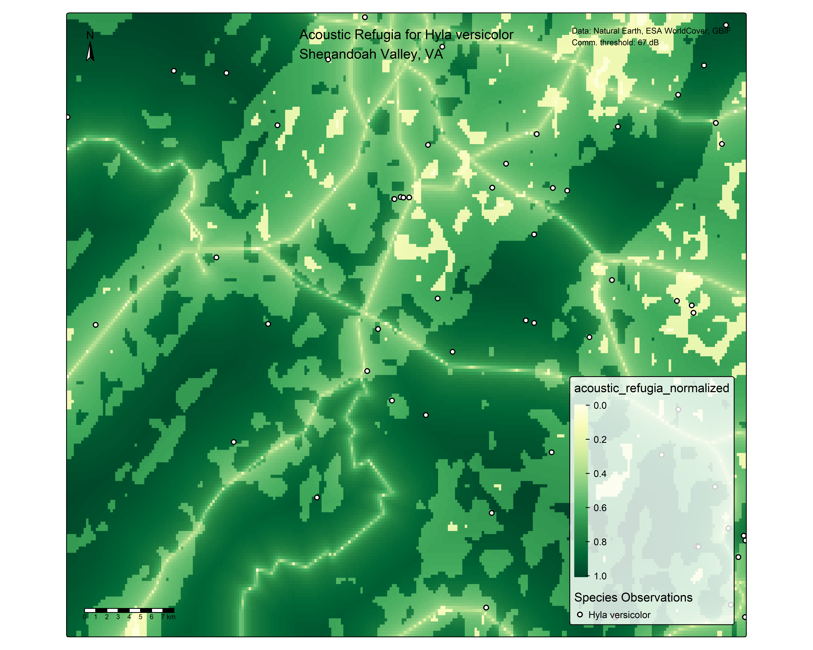
Here, the white dots signify the species occurrence reports from citizen science data for the area if this study.
Validation: Hand-Built Model
Now that we have actual frog occurences, I will test of the species occurrences can be predicted by the model’s estiamtes of high versus low quality acoustic refugia.
I am plotting the acoustic refugia index for the locations that we have occurrence data for. Additionally, I am also plotting the acoustic refugia from 500 random background points in the map. If indeed the acoustic refugia predicts the species occurence, I would expect to see a distinction between the density curves for species occurence points versus the background points. That is, I would expect to see species occurence point predominantly in regions with high acoustic refugia index (curve shifted to the right).
# Extract refugia index at occurrence vs random points
occ_values <- extract(acoustic_refugia_norm, vect(occ_points_thinned))
set.seed(42)
bg_points <- spatSample(acoustic_refugia_norm, size = 500,
method = "random", as.points = TRUE, na.rm = TRUE)
bg_values <- as.data.frame(bg_points)
comparison_df <- bind_rows(
data.frame(type = paste(species_name, "Occurrences"),
refugia = occ_values$acoustic_refugia_normalized),
data.frame(type = "Random Background",
refugia = bg_values$acoustic_refugia_normalized)
)
ggplot(comparison_df, aes(x = refugia, fill = type)) +
geom_density(alpha = 0.6) +
scale_fill_manual(values = c("#2166AC", "#B2182B")) +
labs(title = paste("Refugia Index at", species_name,
"Occurrences vs Random Points"),
x = "Acoustic Refugia Index", y = "Density", fill = "") +
theme_minimal(base_size = 14) +
theme(legend.position = "bottom")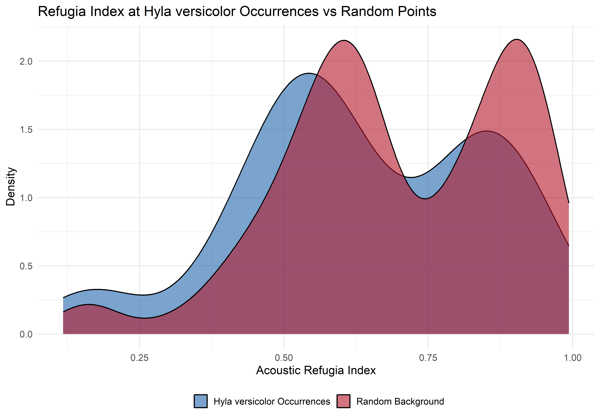
ggsave("figures/08_validation_curves.png",
width = 8, height = 6, dpi = 300, bg = "white")Here, the two curves overlap considerably and it looks like the background curve might be more shifted to the right than the species-occurrence curve. It might mean that either the two curves are not significantly different or the background curve might encapsulate an overall high acoustic refugia index values than the species occurrence curve. I will confirm this by comparing the acoustic refugia index of species-occurrence points and the background points using a wilcoxon test. If the acoustic refugia index of the species occurence point is significantly higher compared to the background points (that is acoustic refugia index predicts species occurence), I would see a p-value <0.05.
Validation Stats
cat("--- Hand-Built Model Validation ---\n")--- Hand-Built Model Validation ---cat("Mean refugia at occurrences:",
round(mean(occ_values$acoustic_refugia_normalized, na.rm = TRUE), 3), "\n")Mean refugia at occurrences: 0.635 cat("Mean refugia at background:",
round(mean(bg_values$acoustic_refugia_normalized, na.rm = TRUE), 3), "\n")Mean refugia at background: 0.695 #let's look at indiviaul mean values for the two groups
comparison_df %>%
group_by(type) %>%
summarise(mean_refugia = mean(refugia, na.rm = TRUE))# A tibble: 2 × 2
type mean_refugia
<chr> <dbl>
1 Hyla versicolor Occurrences 0.635
2 Random Background 0.695wt <- wilcox.test(occ_values$acoustic_refugia_normalized,
bg_values$acoustic_refugia_normalized)
cat("Wilcoxon p-value:", format(wt$p.value, digits = 4), "\n")Wilcoxon p-value: 0.01437 My p-value is significant (0.014) but it looks like the random background has a mean refugia index of 0.695 which is higher than the mean of species-occurrence points (0.635). This means that acoustic refugia index is predicting the species occurrence but in a manner that higher species occurrence is observed in lower acoustic refugia regions.
This is the opposite of what I would have expected to see and my thoughts (or cautionary disclaimers) about accepting this results are:
The species occurrence data I have used is citizen science data and it actually is plausible that most observations taken by humans predominantly happen in ‘non-pristine’ areas (near roads or highways with higher levels of noise and with less tree-cover). In that case the sample could be biased and that is may be why we see this exact opposite result compared to the predictions.
Nevertheless, now that I still have an effect of acoustic refugia index, I wanted to see the relative effects of noise and habitat suitability using ML approaches.
Machine Learning: Random Forest Species Distribution Model
The hand-built refugia index assumes equal weighting of noise and habitat. A Random Forest model has little assumptions about the relative effects or the nature of relationship between independent and dependent variable (no linearity assumption). This approach lets the data determine which environmental variables best predict frog occurrence and reveals their relative importance.
Data Preparation
predictors_stack <- c(noise_modeled, habitat_suit, comm_quality, comm_range_capped)
presence_vals <- extract(predictors_stack, vect(occ_points_thinned))
presence_vals$ID <- NULL
presence_vals$present <- 1
set.seed(42)
n_absence <- nrow(occ_points_thinned) * 3
bg_sample <- spatSample(predictors_stack, size = n_absence,
method = "random", as.points = TRUE, na.rm = TRUE)
absence_vals <- as.data.frame(bg_sample, xy = FALSE)
absence_vals$present <- 0
absence_vals$xy <- NULL
model_data <- bind_rows(presence_vals, absence_vals)
model_data <- na.omit(model_data)
model_data$present <- as.factor(model_data$present)
cat("Presences:", sum(model_data$present == 1), "\n")Presences: 60 cat("Pseudo-absences:", sum(model_data$present == 0), "\n")Pseudo-absences: 180 Model Training
#| label: rf-training
# 70/30 train/test split
set.seed(42)
train_idx <- createDataPartition(model_data$present, p = 0.7, list = FALSE)
train_set <- model_data[train_idx, ]
test_set <- model_data[-train_idx, ]
# Train Random Forest
rf_model <- randomForest(
present ~ .,
data = train_set,
ntree = 500,
importance = TRUE
)
print(rf_model)
Call:
randomForest(formula = present ~ ., data = train_set, ntree = 500, importance = TRUE)
Type of random forest: classification
Number of trees: 500
No. of variables tried at each split: 2
OOB estimate of error rate: 38.69%
Confusion matrix:
0 1 class.error
0 96 30 0.2380952
1 35 7 0.8333333The Random Forest model achieved an out-of-bag (OOB) error rate of 38.69%. However, if we look at the confusion matrix we see a strong asymmetry in classification performance: the model correctly classified 76% of pseudo-absences but only 17% of true presences. This means the model struggles to distinguish locations where frogs have been observed from random background points based on noise and habitat variables alone.
This result is consistent with the validation curves above. The poor prediction of presences likely reflects the observation bias inherent in citizen science data, that is, species occurrences in GBIF are disproportionately reported from accessible locations near roads and trails, which are precisely the areas with higher noise and lower refugia quality.
Although, there is a weak overall classification accuracy, the variable importance analysis below still provides useful information about the relative influence of each environmental predictor on whatever signal does exist in the data.
Variable Importance
This is the key result: which environmental factor matters most for frog occurrence?
png("figures/09_variable_importance.png", width = 8, height = 6, units = "in", res = 300)
varImpPlot(rf_model,
main = "What Predicts Frog Occurrence?",
pch = 19, col = "#2166AC")
dev.off()png
2 # ADD THIS LINE:
varImpPlot(rf_model,
main = "What Predicts Frog Occurrence?",
pch = 19, col = "#2166AC")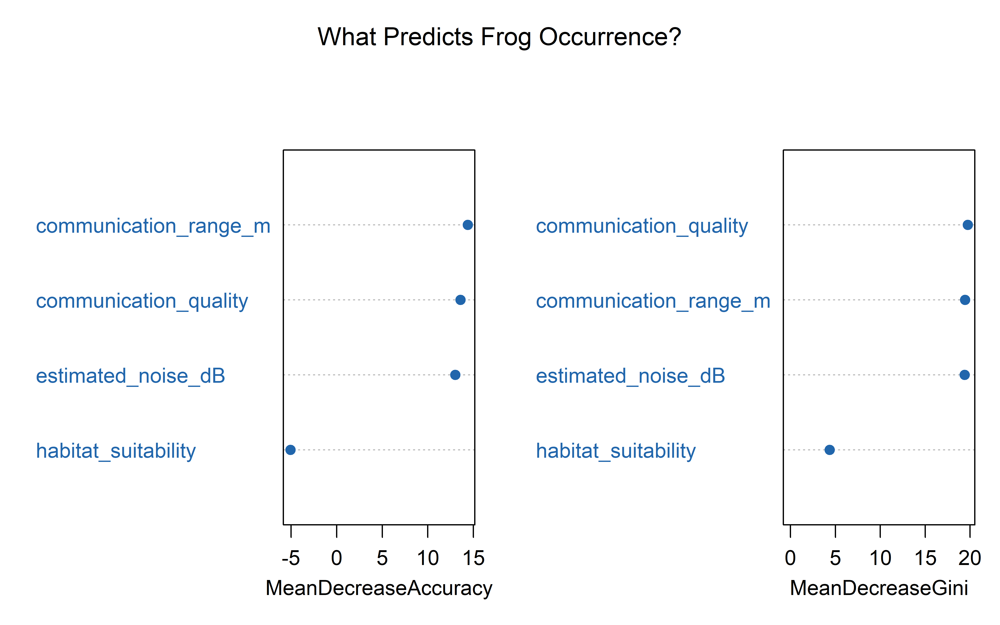
The variable importance plot shows two measures. Mean Decrease in Accuracy signifies how much the model’s prediction accuracy drops when a given variable’s values are randomly shuffled; hence, a large drop means the model relies heavily on that variable. Mean Decrease in Gini measures how much each variable contributes to the purity of the decision splits within the Random Forest trees; higher values mean the variable does more work in separating presences from absences at each branching point.
Here, noise-related variables (estimated noise, communication quality, communication range) rank above habitat suitability, this provides quantitative evidence that anthropogenic noise is a primary driver of frog distributions
Model Evaluation
# Predict on test set
test_pred <- predict(rf_model, test_set)
conf_mat <- confusionMatrix(test_pred, test_set$present)
print(conf_mat)Confusion Matrix and Statistics
Reference
Prediction 0 1
0 46 14
1 8 4
Accuracy : 0.6944
95% CI : (0.5747, 0.7976)
No Information Rate : 0.75
P-Value [Acc > NIR] : 0.8879
Kappa : 0.0833
Mcnemar's Test P-Value : 0.2864
Sensitivity : 0.8519
Specificity : 0.2222
Pos Pred Value : 0.7667
Neg Pred Value : 0.3333
Prevalence : 0.7500
Detection Rate : 0.6389
Detection Prevalence : 0.8333
Balanced Accuracy : 0.5370
'Positive' Class : 0
cat("\nOverall Accuracy:", round(conf_mat$overall["Accuracy"], 3), "\n")
Overall Accuracy: 0.694 cat("Kappa:", round(conf_mat$overall["Kappa"], 3), "\n")Kappa: 0.083 The model evaluation on the held-out test set confirms the patterns observed in the training data. The overall accuracy of 69.4% does not significantly exceed the no-information rate of 75% (p = 0.89), meaning the model does not outperform a naive classifier that simply predicts “absence” for every point. The Kappa statistic of 0.083 indicates near-chance agreement between predictions and observations. Specificity ( the ability to correctly identify true presences) is only 22.2%, while sensitivity for absences is higher at 85.2%.
This weak performance likely reflects spatial bias in citizen science data rather than a true absence of environmental signal. Systematically collected survey data would likely yield stronger results.
Spatial Prediction
The Random Forest model was applied to predict the probability of frog occurrence at every pixel across the landscape. Areas with higher predicted probability (warmer colors) indicate locations where the combination of noise, habitat, and communication range conditions most closely match those at known occurrence sites.
# Predict probability of occurrence across the landscape
rf_prediction <- predict(predictors_stack, rf_model, type = "prob")
# The output has two layers (prob of 0, prob of 1). We want prob of presence.
rf_presence_prob <- rf_prediction[[2]]
names(rf_presence_prob) <- "rf_occurrence_probability"
writeRaster(rf_presence_prob, "output/rf_prediction.tif", overwrite = TRUE)
# Map
rf_map <- tm_shape(rf_presence_prob) +
tm_raster(palette = "YlOrRd",
title = "P(occurrence)",
style = "cont") +
tm_shape(occ_points) +
tm_dots(col = "black", size = 0.12, shape = 21,
fill = "white", border.col = "black") +
tm_layout(
main.title = paste("Random Forest Prediction:", species_name),
main.title.size = 1.0,
legend.position = c("right", "bottom"),
legend.bg.color = "white",
legend.bg.alpha = 0.8,
frame = TRUE
) +
tm_compass(position = c("left", "top"), size = 1.5) +
tm_scalebar(position = c("left", "bottom"))
tmap_save(rf_map, "figures/10_rf_prediction_map.png",
width = 10, height = 8, dpi = 300)
# ADD THIS LINE:
rf_map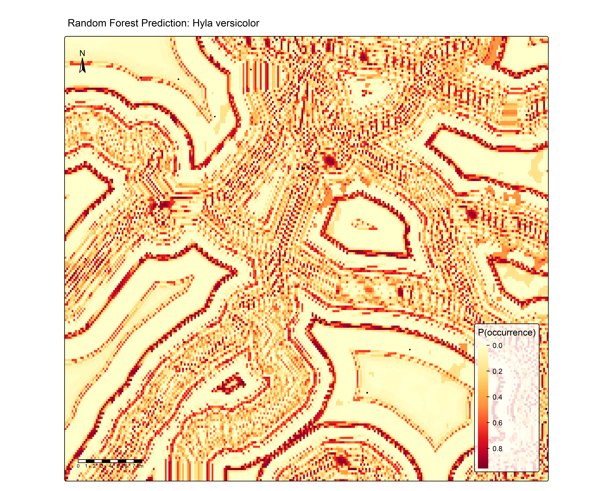
Model Comparison
How does the data-driven Random Forest model compare to the hand-built Acoustic Refugia Index?
# Extract both model predictions at occurrence points
occ_handbuilt <- extract(acoustic_refugia_norm, vect(occ_points))
occ_rf <- extract(rf_presence_prob, vect(occ_points))
# And at background points
bg_handbuilt <- extract(acoustic_refugia_norm,
spatSample(acoustic_refugia_norm, 500,
method = "random", as.points = TRUE,
na.rm = TRUE))
bg_rf <- extract(rf_presence_prob,
spatSample(rf_presence_prob, 500,
method = "random", as.points = TRUE,
na.rm = TRUE))
# Save to file
png("figures/11_model_comparison.png", width = 10, height = 5, units = "in", res = 300)
par(mfrow = c(1, 2))
boxplot(list(
"Occurrences" = occ_handbuilt$acoustic_refugia_normalized,
"Background" = bg_handbuilt$acoustic_refugia_normalized
), main = "Hand-Built Refugia Index",
col = c("#2166AC", "#B2182B"), ylab = "Index Value")
boxplot(list(
"Occurrences" = occ_rf$rf_occurrence_probability,
"Background" = bg_rf$rf_occurrence_probability
), main = "Random Forest Prediction",
col = c("#2166AC", "#B2182B"), ylab = "P(occurrence)")
par(mfrow = c(1, 1))
dev.off()png
2 # Display in Quarto
par(mfrow = c(1, 2))
boxplot(list(
"Occurrences" = occ_handbuilt$acoustic_refugia_normalized,
"Background" = bg_handbuilt$acoustic_refugia_normalized
), main = "Hand-Built Refugia Index",
col = c("#2166AC", "#B2182B"), ylab = "Index Value")
boxplot(list(
"Occurrences" = occ_rf$rf_occurrence_probability,
"Background" = bg_rf$rf_occurrence_probability
), main = "Random Forest Prediction",
col = c("#2166AC", "#B2182B"), ylab = "P(occurrence)")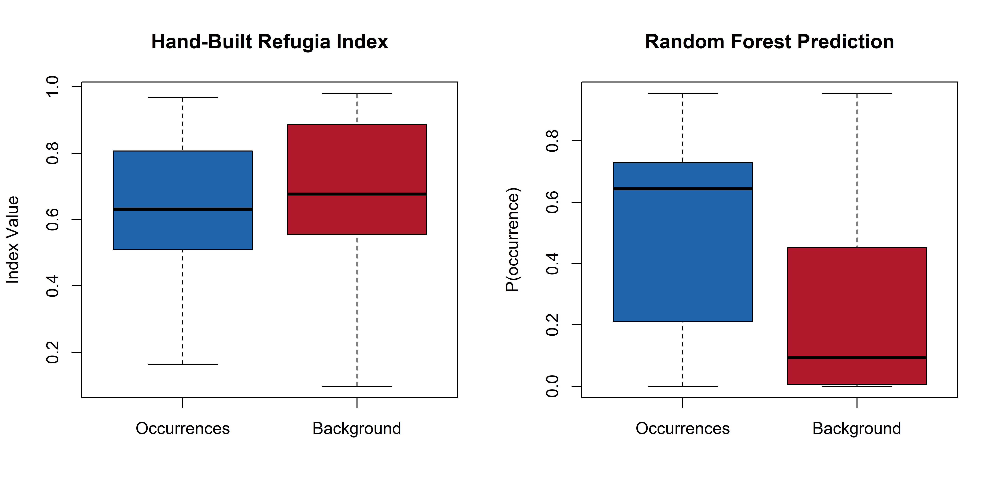
par(mfrow = c(1, 1))The left panel shows that the hand-built refugia index fails to distinguish occurrence sites from random background as both distributions overlap heavily, with background points showing slightly higher median values. The right panel reveals that the Random Forest model, although with a weak overall classification accuracy, still assigns meaningfully higher occurrence probabilities to actual frog locations (median ~0.65) compared to random background points (median ~0.1). This suggests the RF model is capturing environmental signal that the simple multiplicative refugia index misses, likely because it can learn non-linear interactions between predictors rather than assuming equal weighting. The contrast between the two panels highlights thes value of data-driven approaches over hand-built indices, even when overall model accuracy is modest.
Summary
This analysis demonstrates a framework for identifying acoustic refugia — areas where anurans can maintain effective vocal communication despite landscape-level noise pollution. Key findings:
Study species: Hyla versicolor Study area: Shenandoah Valley, VACommunication threshold: 67 dBGBIF occurrence records: 87 RF model accuracy: 0.694 RF model kappa: 0.083 The workflow integrates remote sensing (satellite-derived land cover), spatial noise modeling, species-specific bioacoustic parameters, and machine learning to produce actionable maps for conservation planning. The Random Forest variable importance analysis provides quantitative evidence for the relative roles of noise pollution versus habitat quality in shaping frog distributions.
Implications
- Passive acoustic monitoring: Place recording units in predicted high-refugia areas to maximize detection probability
- Conservation planning: Prioritize noise mitigation (sound barriers, speed reduction) near high-quality habitat identified as noise-compromised
- Road ecology: Quantify the acoustic footprint of transportation infrastructure on vocal wildlife
- Climate adaptation: As temperatures shift, calling phenology will change — this framework can incorporate temporal dynamics
Data Sources
- Noise: Road distance proxy from Natural Earth; replaceable with BTS National Transportation Noise Map
- Land cover: ESA WorldCover via
geodataR package (satellite-derived) - Species occurrences: GBIF via
rgbifR package - Boundaries: Natural Earth via
rnaturalearthR package
Session Info
sessionInfo()R version 4.5.3 (2026-03-11 ucrt)
Platform: x86_64-w64-mingw32/x64
Running under: Windows 11 x64 (build 26200)
Matrix products: default
LAPACK version 3.12.1
locale:
[1] LC_COLLATE=English_United States.utf8
[2] LC_CTYPE=English_United States.utf8
[3] LC_MONETARY=English_United States.utf8
[4] LC_NUMERIC=C
[5] LC_TIME=English_United States.utf8
time zone: America/Chicago
tzcode source: internal
attached base packages:
[1] stats graphics grDevices utils datasets methods base
other attached packages:
[1] caret_7.0-1 lattice_0.22-9 randomForest_4.7-1.2
[4] geodata_0.6-9 viridis_0.6.5 viridisLite_0.4.3
[7] rgbif_3.8.5 rnaturalearthdata_1.0.0 rnaturalearth_1.2.0
[10] dplyr_1.2.1 ggplot2_4.0.2 tmap_4.3
[13] sf_1.1-0 terra_1.9-11
loaded via a namespace (and not attached):
[1] RColorBrewer_1.1-3 rstudioapi_0.18.0
[3] jsonlite_2.0.0 wk_0.9.5
[5] magrittr_2.0.5 farver_2.1.2
[7] rmarkdown_2.31 ragg_1.5.2
[9] vctrs_0.7.3 base64enc_0.1-6
[11] htmltools_0.5.9 leafsync_0.1.0
[13] curl_7.0.0 raster_3.6-32
[15] s2_1.1.9 pROC_1.19.0.1
[17] parallelly_1.46.1 KernSmooth_2.23-26
[19] htmlwidgets_1.6.4 plyr_1.8.9
[21] stars_0.7-2 lubridate_1.9.5
[23] whisker_0.4.1 lifecycle_1.0.5
[25] iterators_1.0.14 pkgconfig_2.0.3
[27] cols4all_0.10 Matrix_1.7-4
[29] R6_2.6.1 fastmap_1.2.0
[31] future_1.70.0 rnaturalearthhires_1.0.0.9000
[33] digest_0.6.39 colorspace_2.1-2
[35] leafem_0.2.5 textshaping_1.0.5
[37] crosstalk_1.2.2 lwgeom_0.2-16
[39] labeling_0.4.3 spacesXYZ_1.6-0
[41] urltools_1.7.3.1 timechange_0.4.0
[43] httr_1.4.8 abind_1.4-8
[45] compiler_4.5.3 microbenchmark_1.5.0
[47] proxy_0.4-29 withr_3.0.2
[49] S7_0.2.1 DBI_1.3.0
[51] logger_0.4.2 MASS_7.3-65
[53] lava_1.9.0 maptiles_0.11.0
[55] rappdirs_0.3.4 tmaptools_3.3
[57] leaflet_2.2.3 classInt_0.4-11
[59] oai_0.4.0 ModelMetrics_1.2.2.2
[61] tools_4.5.3 units_1.0-1
[63] otel_0.2.0 leaflegend_1.2.1
[65] future.apply_1.20.2 nnet_7.3-20
[67] glue_1.8.0 nlme_3.1-168
[69] grid_4.5.3 reshape2_1.4.5
[71] generics_0.1.4 recipes_1.3.2
[73] gtable_0.3.6 class_7.3-23
[75] data.table_1.18.2.1 utf8_1.2.6
[77] sp_2.2-1 xml2_1.5.2
[79] foreach_1.5.2 pillar_1.11.1
[81] stringr_1.6.0 splines_4.5.3
[83] survival_3.8-6 tidyselect_1.2.1
[85] knitr_1.51 gridExtra_2.3
[87] crul_1.6.0 stats4_4.5.3
[89] xfun_0.57 hardhat_1.4.3
[91] timeDate_4052.112 stringi_1.8.7
[93] lazyeval_0.2.3 yaml_2.3.12
[95] evaluate_1.0.5 codetools_0.2-20
[97] httpcode_0.3.0 tibble_3.3.1
[99] cli_3.6.6 rpart_4.1.24
[101] systemfonts_1.3.2 Rcpp_1.1.1
[103] globals_0.19.1 triebeard_0.4.1
[105] png_0.1-9 XML_3.99-0.23
[107] parallel_4.5.3 gower_1.0.2
[109] listenv_0.10.1 ipred_0.9-15
[111] scales_1.4.0 prodlim_2026.03.11
[113] e1071_1.7-17 purrr_1.2.2
[115] rlang_1.2.0